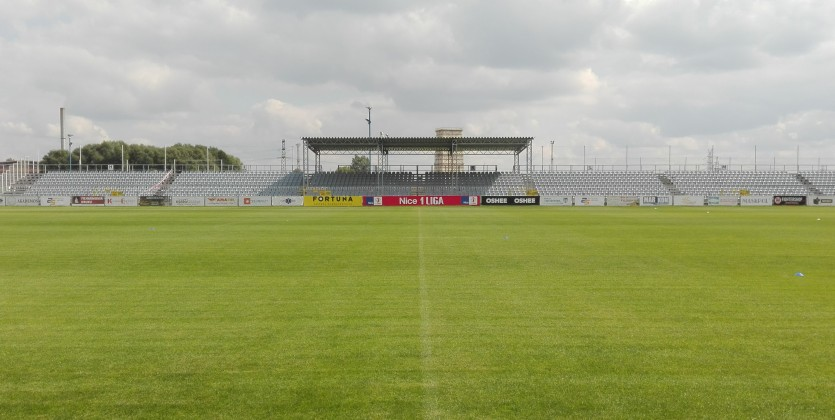

Najnowsze Informacje
RAKÓW CZĘSTROCHOWA

Informacje o klubie:
- RKS Raków Częstochowa SA
- Data założenia: 15 marca 1921
- Adres: Limanowskiego 83, 42-208 Częstochowa
- Stadion: Miejski Stadion Piłkarski - pojemność - 4 200 miejsc
- Prezes: Wojciech Cygan (od 11 lipca 2018)
- Trener: Marek Papszun (od 18 kwietnia 2016)



Napastnicy
Pomocnicy
Obrońcy
Bramkarze
Fanatics Zone
ZGODY
Chemik Kędzierzyn Koźle
Videoton Szekesfehervar
KOSY
Chemik Kędzierzyn Koźle
Videoton Szekesfehervar